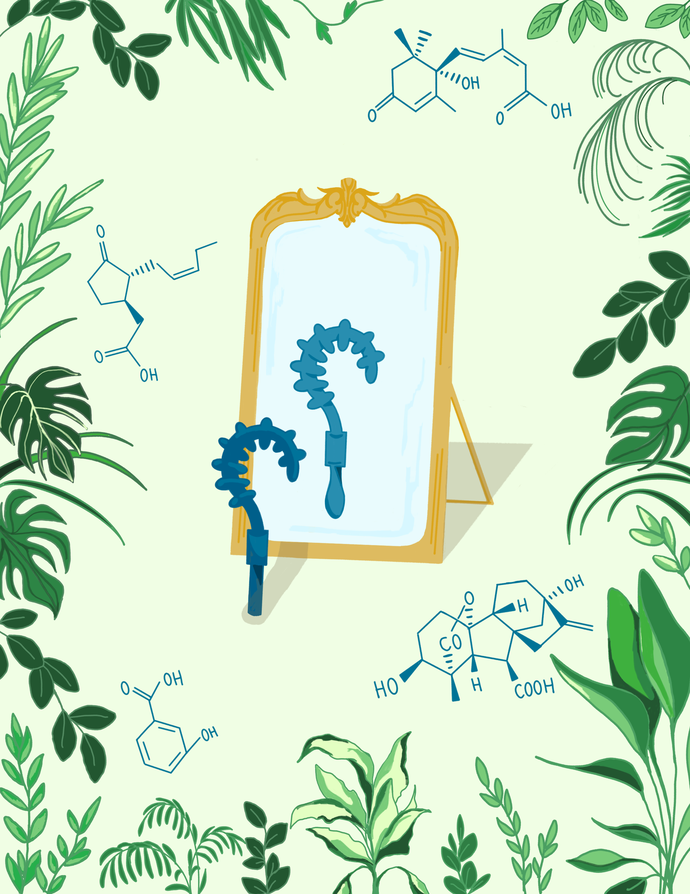

This artwork draws inspiration from the design of a playing card, particularly the Queen card, where the image is mirrored so it can be seen from both sides. This concept was perfect for illustrating the complex relationship between receptor-like proteins (RLPs) and receptor-like kinases (RLKs) in plant immune response signaling. In the design, I used a mirror as a central motif to visually represent the relationship between RLPs and RLKs. The mirror reflects the idea that, while these two types of proteins share structural similarities, they function differently in the context of immune response to biotic attacks. By depicting an RLP looking into the mirror and seeing the reflection of an RLK, I wanted to convey the notion that these proteins are like counterparts, reflecting each other in form, but differing in their roles and mechanisms within the plant’s immune system. The frame of the artwork is composed of plants and chemical structures, which serve as both a decorative and informative element. The plants symbolize the biological context of the immune response. The inclusion of chemical structures around the frame represents the specific biotic attacks that trigger immune responses in plants. These structures act as visual examples of the types of molecular interactions that RLPs and RLKs respond to, further reinforcing the scientific narrative of the artwork.